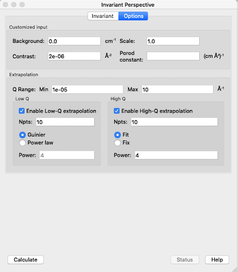

Invariant Calculation
Description
The scattering, or Porod, invariant (\(Q^*\)) is a model-independent quantity that can be easily calculated from scattering data.
For two phase systems, the scattering invariant is defined as the integral of the square of the wavevector transfer (\(Q\)) multiplied by the scattering cross section over the full range of \(Q\) from zero to infinity, that is
in the case of pinhole geometry (SAS).
For slit geometry (USAS) the invariant is given by
where \(\Delta q_v\) is the slit height.
The worth of \(Q^*\) is that it can be used to determine the volume fraction and the specific area of a sample. Whilst these quantities are useful in their own right, they can also be used in further analysis.
The difficulty with using \(Q^*\) arises from the fact that experimental data is never measured over the range \(0 \le Q \le \infty\). At best, combining USAS and WAS data might cover the range \(10^{-5} \le Q \le 10\). Thus it is usually necessary to extrapolate the experimental data to low and high \(Q\). For this
High-\(Q\) region (>= Qmax in data)
- The power law function \(C/Q^4\) is used where the constant \(C = 2 \pi \Delta\rho\, S_v\) with \(\Delta\rho\), the scattering length density (SLD) contrast and \(S_v\), the specific surface area. The value of \(C\) is to be found by fitting part of data within the range \(Q_{N-m}\) to \(Q_N\) (where \(m < N\)), .
Low-\(Q\) region (<= Qmin in data)
- The Guinier function \(I(Q)=I(0) \exp (-R_g^2 Q^2/3)\) where \(R_g\) is the radius of gyration. The values of \(I(0)\) and \(R_g\) are obtained by fitting as for the high-\(Q\) region above. Alternatively a power law can be used.
Using invariant analysis
- Select Invariant from the Analysis menu on the SasView toolbar.
- Load some data with the Data Explorer.
- Select a dataset and use the Send To button on the Data Explorer to load the dataset into the Invariant panel.
Use the Customised Input box on the Options tab to subtract any background, specify the contrast (i.e. difference in SLDs - this must be specified for the eventual value of \(Q^*\) to be on an absolute scale), or to rescale the data.
Adjust the extrapolation range in the Options tab as necessary. In most cases the default values will suffice.
Click the Calculate button.
To include a lower and/or higher \(Q\) range, check the relevant Enable Extrapolate check boxes.
Option tab of the Invariant panel.
If power law extrapolations are chosen, the exponent can be either held fixed or fitted. The number of points, Npts, to be used for the basis of the extrapolation can also be specified in the related Power box(es).
If the value of \(Q^*\) calculated with the extrapolated regions is invalid, the related box will be highlighted in red.
The details of the calculation are available by clicking the Status button at the bottom of the panel.

{kind=link}
Parameters
Volume Fraction
The volume fraction \(\phi\) is related to \(Q^*\) by
where \(\Delta\rho\) is the SLD contrast.
Specific Surface Area
The specific surface area \(S_v\) is related to \(Q^*\) by
where \(C_p\) is the Porod constant.
Reference
O. Glatter and O. Kratky Chapter 2 in Small Angle X-Ray Scattering Academic Press, New York, 1982
Note
This help document was last changed by Steve King, 01May2015